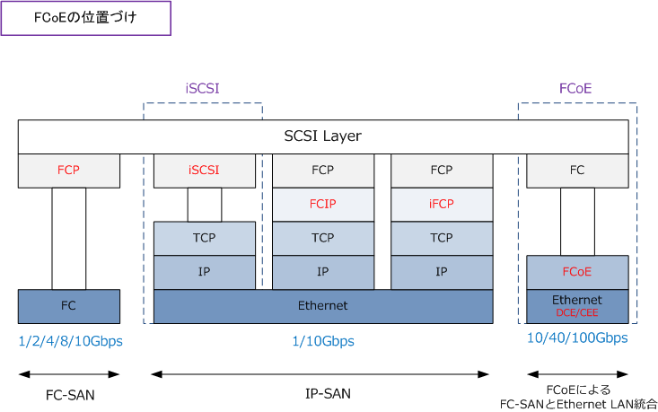
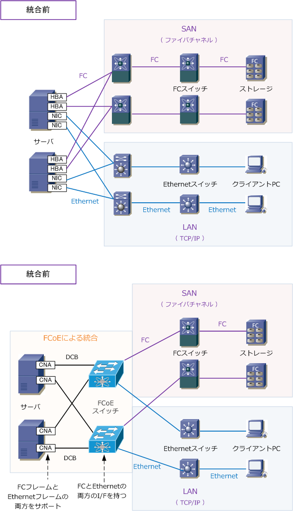
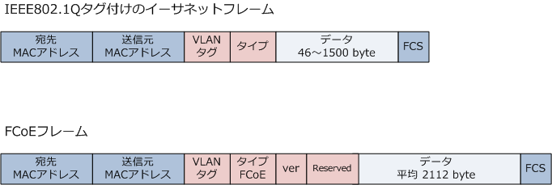

FCoE ( Fibre Channel over Ethernet )
FCoEとは
FCoEとは、ファイバチャネルのフレームをカプセル化し、10Gbps/40Gbps/100Gbpsイーサネットで動作 するプロトコルです。FCoEによりFC-SANとEthernet LANの統合が可能となります。物理的にはサーバの インターフェースに必要なCNA（Converged Network Adapter）と、FCoE対応スイッチが必要となります。

FCoEの"Ethernet"は、既存のイーサネットをそのまま使用するのではなく、確実なデータ伝送を実現する ために、例えば以下のような拡張仕様を盛り込んだイーサネットがFCoEの物理層として採用されています。
| IEEE | 説明 |
|---|---|
| IEEE 802.1Qbb | PFC ： Priority-based Flow Control。優先度ベースフロー制御。 |
| IEEE 802.1Qaz | ETS ： Enhanced Transmission Selection。拡張伝送選択。 |
| IEEE 802.1 DCBX | DCBX ： Data Center Bridging Exchange Protocol。DCB交換プロトコル。 |
| IEEE 802.1Qau | CN ： Congestion Nortification。輻輳通知。 |
FCoEは、2009年6月に標準化されていますが、各ベンダーは標準化以前にFCoE対応製品を開発、販売して いることから、FCoEで利用する拡張されたイーサネットのことをCiscoではDCE（Data Center Ethernet） と呼んでおりBrocadeではCEE（Converged Enhanced Ethernet）と呼びます。互換性の実現を現在模索中。 ※ 拡張イーサネットの用語としてベンダー独自にDCE/CEEを使用していますが、正確にはDCB（Data Center Bridging）と言います。
FCoEとiSCSIの違い
そもそもFCoEによるFC-SANとEthernet LANの統合ネットワークよりも、iSCSIによるIP-SANの方がより シンプルな統合型ネットワークになるのでは？という疑問があるかもしれませんが、iSCSIでは、TCP/IPを 使用することでオーバヘッドが発生するので、FCoEのネットワークの方が高いパフォーマンスを発揮します。 しかし導入しやすさやコストという点ではiSCSIの方が圧倒的に優勢性があります。iSCSIネットワークでは GigabitEthernetから動作する一方、FCoEネットワークでは10GigabitEthernetのインフラが必要となります。
FCoEの物理構成
FC-SAN、IP-SAN、FCoEによる統合ネットワークにおいて、物理的に必要となるものは以下の通りです。
| 比較項目 | FC-SAN | IP-SAN | FCoEによる統合ネットワーク |
|---|---|---|---|
| ケーブル | 光ファイバー | 光ファイバー/メタルケーブル | 光ファイバー |
| インターフェース | HBA | NIC | CNA |
| 導入機器 | FCスイッチ | LANスイッチ | FCoEスイッチ |
FCoEによる統合前と統合後
下図の通り、FCoEの統合後では高価なインターフェースとケーブルの数を半減しています。これによる コスト削減、電力削減、シンプルな物理配線による管理効率化のメリットがあります。すでにFC-SANが ある場合、FCoEでも既存のFCの運用管理の仕組みをそのまま踏襲できるのでそれが最大のメリットです。 ※ 当然ながら、新規にストレージネットワークを構築する場合、小規模ならiSCSIによるIP-SANの方がコスト的に優れています。

上図は機器台数も削減できる大きなメリットを生んで いる構成例です。当然、FCoEには問題点もあります。
先ず、FCoEによる統合ネットワークを運用のために 高いスキルが要求されること。次に、機器の台数を 削減できない場合などはコストに見合う投資効果が 得られるかどうかということです。機器台数が減れば ランニングの保守費用も下がりさらにDCのスペース 費用や管理費用も下がり、数年間くらいでペイできる 可能性もあるので問題ありません。あとは管理者の 利害関係が一致するという事も大きなポイントです。
FCoEのフレーム
DCBの拡張イーサネット上でFCの通信を行うために、FCフレームをイーサネットフレームのデータ部分に 組み込む必要があります。FCoEでは、VLANタグフレームを使用するため、以下では、IEEE802.1Qのタグ 付けのイーサネットフレームとFCoEのイーサネットフレームを比較してみます。注目すべきは、FCoEでは データサイズが平均2112byteであることから、FCoEを利用するためには、ジャンボフレームまたはベビー ジャンボフレームをサポートするイーサネット環境が必要であることが分かります。

FCoE対応スイッチに、イーサネットフレーム、FCフレーム、FCoEフレームが着信すると以下のように動作。
1. イーサネットフレームは、MACアドレスに基づいて転送が行われます。 2. FCフレームは、イーサネットフレームにカプセル化（つまりFCoE）してサーバへ転送されます。 3. FCoEフレームはイーサネットでカプセル化されているFCフレームを取り出しFCスイッチへ転送されます。